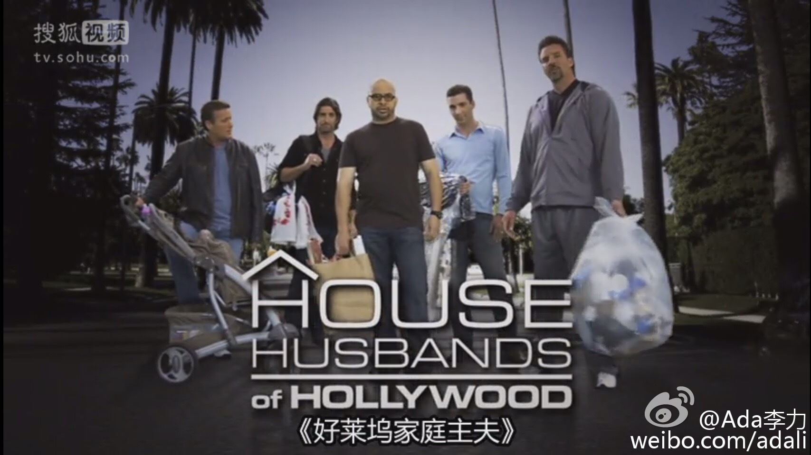

一共九集。第十集是节目播出后一段时间，这几个家庭的访谈节目，回顾了下节目中令人印象最深刻的一些片段。还好，都没离婚。@Ada李力:偶然搜到真人秀纪录片《好莱坞家庭主夫》，刚看完的第四集主题是财政冲突，女人赚钱养家，女人自己买买买，刷爆信用卡，男人想约束这种消费，女人会说我花自己赚的钱 。这种真人秀节目比电视剧好看，看这种鸡毛蒜皮的家庭琐事，真的很消遣。 预告第五集主题是讲性，周末看啦。搜狐视频有。


 。这种真人秀节目比电视剧好看，看这种鸡毛蒜皮的家庭琐事，真的很消遣。
。这种真人秀节目比电视剧好看，看这种鸡毛蒜皮的家庭琐事，真的很消遣。